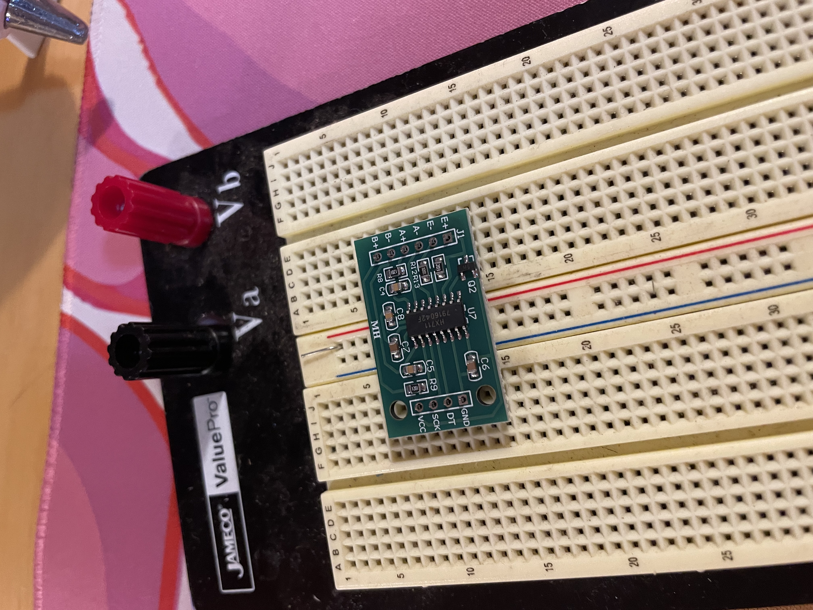
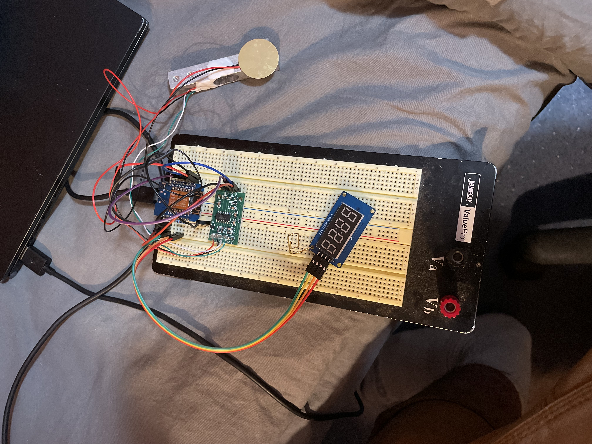
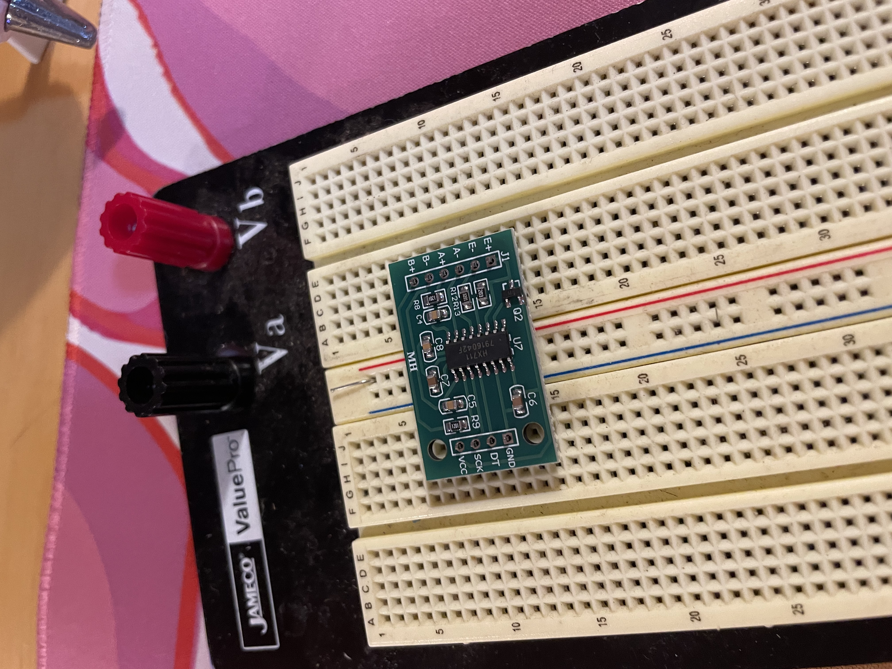
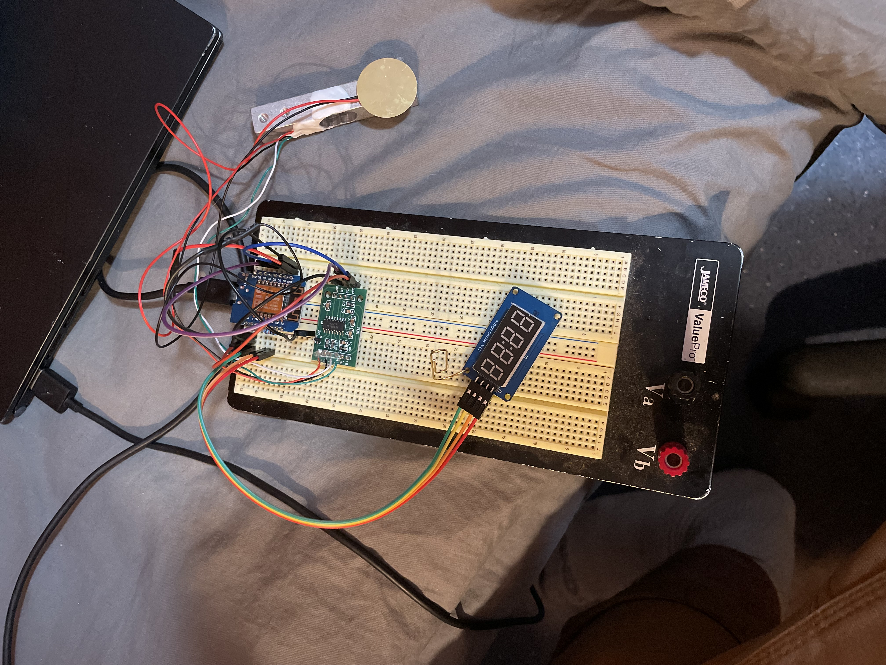
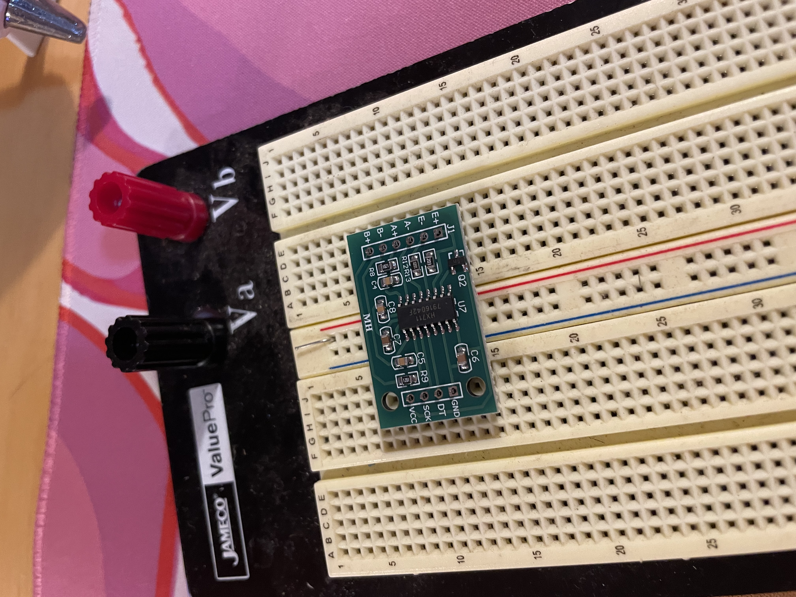
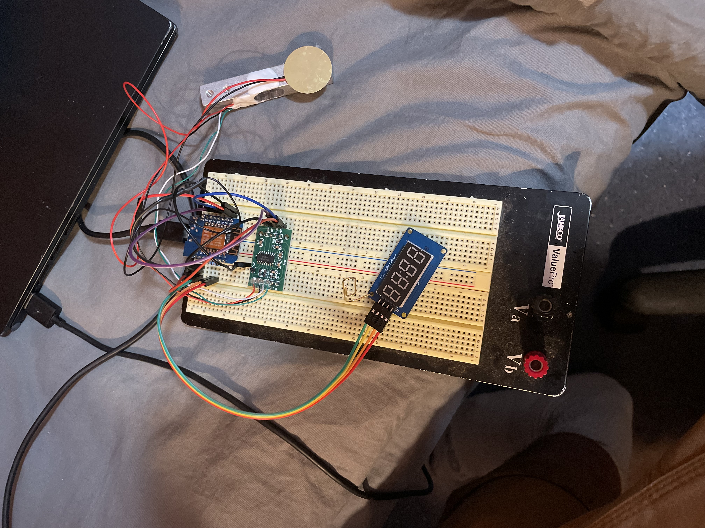

P-Square began as a joke between friends but evolved into a serious prototype project. It applies undergraduate electrical engineering concepts to a sanitation-focused product.
The idea is simple: gamify urinal accuracy. The device sits inside a urinal and measures stream strength and duration using extremely low-power circuitry. It generates a four-digit score displayed on a 7-segment display. After completion, a short code can be entered later to upload scores to a leaderboard — maintaining privacy while encouraging engagement.
The system emphasizes low power design, sensor signal processing, and user interaction without requiring touch until after restroom exit. Prototypes are currently in development.

